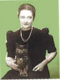

Thursday, April the 16th, 2009
back to: title, date or indexes
Over at The New Psalmanazar, Ian Woolcott remarks: “If my cat were to write a book I think it would read something like Mein Kampf.” He describes his cat as a wicked, embittered creature, which is almost certainly true of all cats, whose saving grace is their unfathomable stupidity. It is this combination of characteristics which makes them so engaging, unlike dogs. As we have seen, dogs are boring.
We can adduce further evidence of cats' fundamental malevolence from Nerea De Clifford. In her study What British Cats Think About Television, she wrote: “Most cats show an interest of some kind, though it is often of hostility… a significant reaction is the display of excitement when any picture, especially of birds, moves quickly across the screen.” (Previously quoted in the Archives, March 2004.)
Here is a photograph of Nerea De Clifford, described by the Cats Protection League as “a popular and gracious lady”.

Hooting Yard on the Air, October the 1st, 2015 : “Municipal Monkey Vampires” (starts around 28:08)